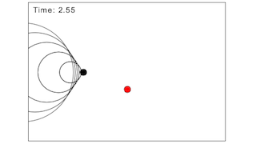

This model simulates the doppler effect. Students are shown five different animations with different combinations of moving/stationary sources/detectors. The final animation shows what happens when a source exceeds the speed of sound.